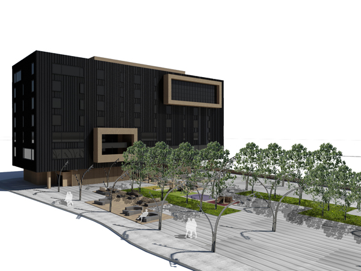
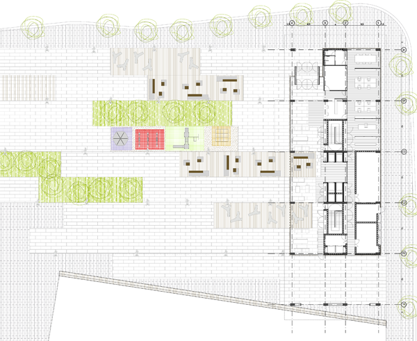

Albergue en la ciudad de Hamburgo. El proyecto consiste en un edificio compacto con ventilación 4 vientos. La distribución está pensada para los inquilinos, una base central de servicios (escaleras, baños y vestidores) y en cambio todas las habitaciones estan distribuidas alrededor de la planta para conseguir vistas exteriores.